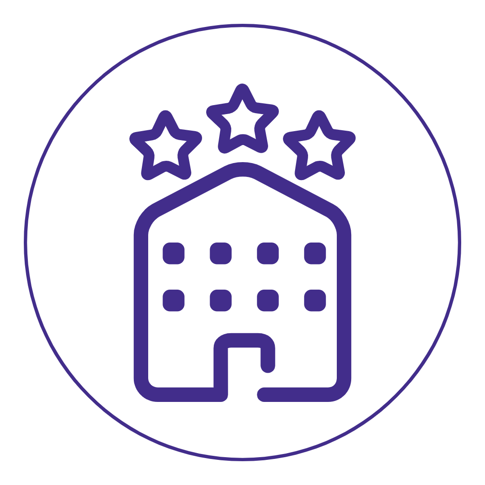
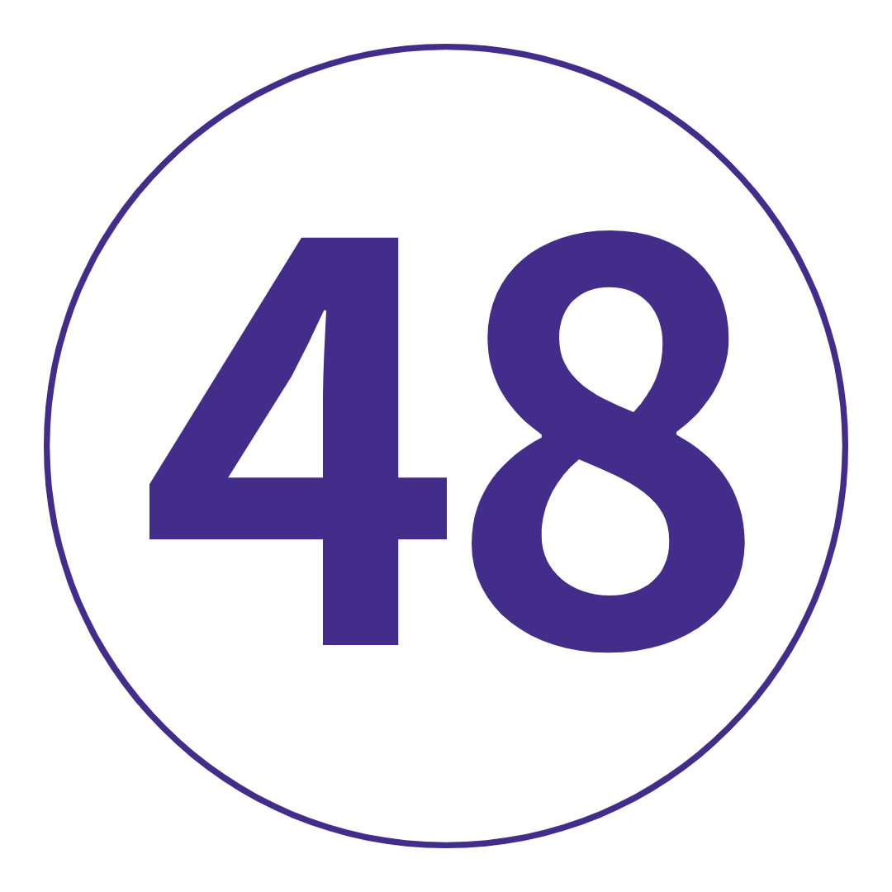

여행 개요
지도
나를 위한 여행인가? 매혹적인. 매우 훌륭한. 축제.
빛나는 갑옷의 기사와 마법의 호박은 잊어버리세요. 유럽에서 가장 매혹적인 도시와 마음을 사로잡는 풍경에 대한 이번 겨울 탐험은 진짜 동화입니다. 런던에서의 시작과 끝 - 우리는 모든 신화를 파헤치고 전설을 배우고 서양과 동양이 제공하는 탄수화물이 풍부한 맛에 탐닉할 것입니다.
또한 인생에서 필요하지 않은 비포장 장소를 발견하십시오. 지금까지.
여행 일정
-
 런던에서 프랑스 파리로 (또는 파리에 합류)
새롭고 이국적인 것을 받아들일 준비가 되셨습니까? 더 깊이 들어가십시오. 지역 주민을 만나세요. 모든 것을 발견하십시오. 앞으로 27일이 인생을 바꿀 것입니다. ol' Blighty에서 여행 동료를 만나고 Earl Gray 한 잔으로 몸을 녹이고 AUX 코드에 손을 대십시오. 채널을 건너뛰기 위해 일찍 출발합니다. 차라리 파리에서 만나? 드라마가 없다! 코코 샤넬, 모나리자 및 세계에서 가장 맛있는 페이스트리의 고향 - 파리는 문화와 군침이 도는 음식의 유럽 수도로 명성이 높습니다. 저희를 믿으세요. 우리는 갱단과 푸짐한 저녁 식사를 하기 전에 운전 투어로 모든 쇼 스토퍼를 확인할 것입니다. 건배!
런던에서 프랑스 파리로 (또는 파리에 합류)
새롭고 이국적인 것을 받아들일 준비가 되셨습니까? 더 깊이 들어가십시오. 지역 주민을 만나세요. 모든 것을 발견하십시오. 앞으로 27일이 인생을 바꿀 것입니다. ol' Blighty에서 여행 동료를 만나고 Earl Gray 한 잔으로 몸을 녹이고 AUX 코드에 손을 대십시오. 채널을 건너뛰기 위해 일찍 출발합니다. 차라리 파리에서 만나? 드라마가 없다! 코코 샤넬, 모나리자 및 세계에서 가장 맛있는 페이스트리의 고향 - 파리는 문화와 군침이 도는 음식의 유럽 수도로 명성이 높습니다. 저희를 믿으세요. 우리는 갱단과 푸짐한 저녁 식사를 하기 전에 운전 투어로 모든 쇼 스토퍼를 확인할 것입니다. 건배!
키워드 공식 만찬 + 파리 드라이브 투어 -
 파리
네, 드디어 오셨습니다. 그래서, 오늘은 단순히 당신을 하는 날입니다. 루브르 박물관(미리 티켓을 예약하세요!)과 오르세 미술관을 방문하여 버킷리스트를 확고히 만드십시오. 마을에서 가장 아늑한 제과점을 찾으십시오(여행 리더는 그것이 어디에 있는지 알고 있습니다). Shakespeare and Co. Bookshop에서 역사의 서가 사이에서 길을 잃으십시오. 샹젤리제 거리를 따라 플라스틱 플래시를 터트립니다. 또는 I Love You Wall에서 기분 좋은 분위기를 연출해보세요. 서리가 내린 느낌? 우리는 당신을 얻었습니다 – 선택적인 자전거 여행에서 그 송아지를 따뜻하게 유지하십시오. 또는 세느강을 따라 유람선을 타고 사랑의 도시를 또 다른 모습으로 볼 수 있습니다. 오늘 밤, 카바레에서 저녁 옵션으로 전력을 다하십시오. 밝은 조명, OTT 의상 및 죽음에 도전하는 곡예를 생각해 보십시오. 당신은 결국 캉캉의 고향에 있습니다.
파리
네, 드디어 오셨습니다. 그래서, 오늘은 단순히 당신을 하는 날입니다. 루브르 박물관(미리 티켓을 예약하세요!)과 오르세 미술관을 방문하여 버킷리스트를 확고히 만드십시오. 마을에서 가장 아늑한 제과점을 찾으십시오(여행 리더는 그것이 어디에 있는지 알고 있습니다). Shakespeare and Co. Bookshop에서 역사의 서가 사이에서 길을 잃으십시오. 샹젤리제 거리를 따라 플라스틱 플래시를 터트립니다. 또는 I Love You Wall에서 기분 좋은 분위기를 연출해보세요. 서리가 내린 느낌? 우리는 당신을 얻었습니다 – 선택적인 자전거 여행에서 그 송아지를 따뜻하게 유지하십시오. 또는 세느강을 따라 유람선을 타고 사랑의 도시를 또 다른 모습으로 볼 수 있습니다. 오늘 밤, 카바레에서 저녁 옵션으로 전력을 다하십시오. 밝은 조명, OTT 의상 및 죽음에 도전하는 곡예를 생각해 보십시오. 당신은 결국 캉캉의 고향에 있습니다.
키워드 아침밥
추가 옵션 파리 카바레 쇼: €80부터 / 세느강 유람선: €10부터 / 파리 자전거 투어: €30부터 -
 파리에서 스위스 알프스, 스위스까지
면책 조항: 오늘은 약간의 드라이브입니다. 하지만 이미 알고 계셨죠? 끈을 묶으십시오. 여행 동료에 대해 더 잘 알아보세요. 그리고 가장 입이 떡 벌어지고 눈 덮인 풍경이 창 너머로 윙윙거리는 소리를 들을 수 있습니다. 그들은 집에서 이와 같은 전망을 가지고 있지 않습니다. 상상 속의 동화 같은 마을과 낭만적인 성에 신호를 보냅니다. 나중에, 우리는 호텔 바에 향하기 전에 그룹 저녁 식사에 갇힐 것입니다. 또는 김이 모락모락 나는 글루바인 한잔과 함께 상쾌한(참고: 얼어붙은) 고산 공기에 앉아 있습니다. 예, 이것이 당신이 온 이유입니다.
파리에서 스위스 알프스, 스위스까지
면책 조항: 오늘은 약간의 드라이브입니다. 하지만 이미 알고 계셨죠? 끈을 묶으십시오. 여행 동료에 대해 더 잘 알아보세요. 그리고 가장 입이 떡 벌어지고 눈 덮인 풍경이 창 너머로 윙윙거리는 소리를 들을 수 있습니다. 그들은 집에서 이와 같은 전망을 가지고 있지 않습니다. 상상 속의 동화 같은 마을과 낭만적인 성에 신호를 보냅니다. 나중에, 우리는 호텔 바에 향하기 전에 그룹 저녁 식사에 갇힐 것입니다. 또는 김이 모락모락 나는 글루바인 한잔과 함께 상쾌한(참고: 얼어붙은) 고산 공기에 앉아 있습니다. 예, 이것이 당신이 온 이유입니다.
키워드 아침밥 + 공식 만찬 -
 스위스 알프스
겨울의 스위스를 설명하는 단어는 MAGIC입니다. 그래서, 이것이 정확히 무엇을 의미하는지 알아볼 수 있는 자유 시간입니다. 맑은 날을 위한 우리의 제안은? 회전 곤돌라를 타고 티틀리스 산 정상까지 올라가 믿을 수 없는 파노라마를 감상하세요(노력 없이). 또는 부츠를 신고 숲길을 탐험하세요. '거룩한' 순간이 보장됩니다. 오히려 이곳의 미식의 경이로움을 발견하시겠습니까? 시내로 향하여 타오르는 불 옆에서 세계 최고의 핫 초콜릿을 한 모금 즐기십시오. 무엇을 선택하든 며칠 동안 조회수가 표시됩니다. 오늘 저녁은 당신의 몫입니다. 아직 치즈 퐁듀를 먹어보지 못하셨나요? 지금이 기회입니다(유당 불내증이 아닌 경우).
스위스 알프스
겨울의 스위스를 설명하는 단어는 MAGIC입니다. 그래서, 이것이 정확히 무엇을 의미하는지 알아볼 수 있는 자유 시간입니다. 맑은 날을 위한 우리의 제안은? 회전 곤돌라를 타고 티틀리스 산 정상까지 올라가 믿을 수 없는 파노라마를 감상하세요(노력 없이). 또는 부츠를 신고 숲길을 탐험하세요. '거룩한' 순간이 보장됩니다. 오히려 이곳의 미식의 경이로움을 발견하시겠습니까? 시내로 향하여 타오르는 불 옆에서 세계 최고의 핫 초콜릿을 한 모금 즐기십시오. 무엇을 선택하든 며칠 동안 조회수가 표시됩니다. 오늘 저녁은 당신의 몫입니다. 아직 치즈 퐁듀를 먹어보지 못하셨나요? 지금이 기회입니다(유당 불내증이 아닌 경우).
키워드 아침밥
추가 옵션 Titlis 산으로의 경치 좋은 여행: CHF 64부터 -
 스위스 알프스에서 리히텐슈타인 경유 이탈리아 밀라노까지
여행 지도자에게 마지막 눈덩이를 던져주고 몽환적인 겨울 봉우리의 또 다른 사진을 찍으세요. - 우리는 아침 식사 후에 이곳을 떠야 합니다. 아주 작은 나라 리히텐슈타인에 잠시 들른 후, 우리는 세계 스타일의 수도 밀라노에 발을 들여놓을 것이다. 유명 브랜드(패션이라고 불리고, 찾아보세요)와 세계에서 다섯 번째로 큰 기독교 교회가 있는 본고장(Trip Leader)은 잠시 산책한 후 오후에 나만의 즉흥적인 일을 할 수 있습니다. 갤러리아 비토리오 에마누엘레 II에서 윈도 쇼핑을 즐기세요. Duomo 내부에서 보기(및 I-N-C-R-E-D-I-B-L-E 아키텍처)를 흡수합니다. 트리엔날레 디자인 박물관에서 활주로를 걸어보세요. 아니면 아페리티보에 빠져들기 위해 고통스러울 정도로 멋진 바를 찾으세요. 여기 크리스마스 때? 파네톤을 써보세요. 여기서 유래되었으니 이모가 매년 가져오는 포장된 것보다 더 나을 거란 걸 아실 거예요.
스위스 알프스에서 리히텐슈타인 경유 이탈리아 밀라노까지
여행 지도자에게 마지막 눈덩이를 던져주고 몽환적인 겨울 봉우리의 또 다른 사진을 찍으세요. - 우리는 아침 식사 후에 이곳을 떠야 합니다. 아주 작은 나라 리히텐슈타인에 잠시 들른 후, 우리는 세계 스타일의 수도 밀라노에 발을 들여놓을 것이다. 유명 브랜드(패션이라고 불리고, 찾아보세요)와 세계에서 다섯 번째로 큰 기독교 교회가 있는 본고장(Trip Leader)은 잠시 산책한 후 오후에 나만의 즉흥적인 일을 할 수 있습니다. 갤러리아 비토리오 에마누엘레 II에서 윈도 쇼핑을 즐기세요. Duomo 내부에서 보기(및 I-N-C-R-E-D-I-B-L-E 아키텍처)를 흡수합니다. 트리엔날레 디자인 박물관에서 활주로를 걸어보세요. 아니면 아페리티보에 빠져들기 위해 고통스러울 정도로 멋진 바를 찾으세요. 여기 크리스마스 때? 파네톤을 써보세요. 여기서 유래되었으니 이모가 매년 가져오는 포장된 것보다 더 나을 거란 걸 아실 거예요.
키워드 아침밥 + 리히텐슈타인 방문 + 밀라노 오리엔테이션 투어 -
 밀라노에서 피사를 통해 이탈리아 피렌체로
우리는 오늘 토스카나 요리의 수도로 나아가고 있습니다. 당신은 당신의 뚱뚱한 바지를 포장, 오른쪽? 하지만 먼저 피사의 기이한 탑입니다. 그 사진을 찍을 예정이라면 독특한 것을 생각해 보세요. 부디. 오늘 밤 저녁 식사를 하러 가기 전에 양탄자를 깔고 아르노 강을 따라 산책을 하며 이곳에 온 것 같은 분위기를 느껴보세요. 그럼: 누가 노래방이라고 했지? 당신이 그것을 원한다면 지역 바에서 발라드의 전투에서 갱단에 합류하십시오. 또는 젤라테리아에서 좋은 재료를 한 스쿱(또는 두 개) 찾아보세요. 누가 겨울에 젤라토를 먹을 수 없다고 했습니까? 아무도.
밀라노에서 피사를 통해 이탈리아 피렌체로
우리는 오늘 토스카나 요리의 수도로 나아가고 있습니다. 당신은 당신의 뚱뚱한 바지를 포장, 오른쪽? 하지만 먼저 피사의 기이한 탑입니다. 그 사진을 찍을 예정이라면 독특한 것을 생각해 보세요. 부디. 오늘 밤 저녁 식사를 하러 가기 전에 양탄자를 깔고 아르노 강을 따라 산책을 하며 이곳에 온 것 같은 분위기를 느껴보세요. 그럼: 누가 노래방이라고 했지? 당신이 그것을 원한다면 지역 바에서 발라드의 전투에서 갱단에 합류하십시오. 또는 젤라테리아에서 좋은 재료를 한 스쿱(또는 두 개) 찾아보세요. 누가 겨울에 젤라토를 먹을 수 없다고 했습니까? 아무도.
키워드 아침밥 + 공식 만찬 + 피사의 사탑 방문
-
 피렌체
플로렌스는 당신이 찌를 수 있는 것보다 더 많은 이야기를 가지고 있고, 멜버른의 힙스터보다 더 많은 문화를 가지고 있으며, 세계에 David를 안겨주었습니다(1504년 이래로 아버지의 몸을 부끄럽게 만들었습니다). 우리는 현지 가이드와 함께 심층 도보 여행을 통해 토지의 위치를 알 수 있습니다. 그런 다음: 새로 발견한 지식을 가지고 혼자 거리를 누비십시오. 우피치 갤러리입니다. 베키오 다리. 시뇨리아 광장. 두오모. 모든 것을 볼 수는 없지만 시도해 볼 수는 있습니다! 오늘 밤, 비니를 쓰고 미켈란젤로 광장으로 가십시오. 겨울에도 석양은 붉게 물듭니다. 그런 다음 Babae 레스토랑에서 수백 년 된 전통에 빠져보세요. 피렌체에서 유일하게 작동하는 '와인 창'이 있는 곳입니다. 팔렸다.
피렌체
플로렌스는 당신이 찌를 수 있는 것보다 더 많은 이야기를 가지고 있고, 멜버른의 힙스터보다 더 많은 문화를 가지고 있으며, 세계에 David를 안겨주었습니다(1504년 이래로 아버지의 몸을 부끄럽게 만들었습니다). 우리는 현지 가이드와 함께 심층 도보 여행을 통해 토지의 위치를 알 수 있습니다. 그런 다음: 새로 발견한 지식을 가지고 혼자 거리를 누비십시오. 우피치 갤러리입니다. 베키오 다리. 시뇨리아 광장. 두오모. 모든 것을 볼 수는 없지만 시도해 볼 수는 있습니다! 오늘 밤, 비니를 쓰고 미켈란젤로 광장으로 가십시오. 겨울에도 석양은 붉게 물듭니다. 그런 다음 Babae 레스토랑에서 수백 년 된 전통에 빠져보세요. 피렌체에서 유일하게 작동하는 '와인 창'이 있는 곳입니다. 팔렸다.
키워드 아침밥 + 현지 가이드와 함께하는 피렌체 도보여행 -
 피렌체에서 오르비에토를 거쳐 로마로
앞으로! 첫 번째: 오르비에토(Orvieto)의 언덕 위 마을에서 피트 스톱(pit stop) - 웅장한 대성당을 보고 멧돼지 파니니를 맛보기 위해(채식주의자가 아닌 경우). 그런 다음: la bella Roma가 기다리고 있습니다. 하나의 EPIC 도보 여행을 위해 스트랩을 착용하십시오. 우리는 몇 시간 동안 논스톱 명소, 관광지를 벗어나 숨겨진 보석, 거의 3000년의 역사에 대해 이야기하고 있습니다. 판테온(Pantheon)을 지나 스페인 계단(Spanish Steps)에 앉지 말고 거대한 콜로세움(Colosseum)을 둘러보고 트레비 분수(Trevi Fountain)에 2센트를 던지십시오. 그럼, 미식가를 위해 디즈니랜드에 가셨으니 오늘 저녁은 괜찮을 거에요.
피렌체에서 오르비에토를 거쳐 로마로
앞으로! 첫 번째: 오르비에토(Orvieto)의 언덕 위 마을에서 피트 스톱(pit stop) - 웅장한 대성당을 보고 멧돼지 파니니를 맛보기 위해(채식주의자가 아닌 경우). 그런 다음: la bella Roma가 기다리고 있습니다. 하나의 EPIC 도보 여행을 위해 스트랩을 착용하십시오. 우리는 몇 시간 동안 논스톱 명소, 관광지를 벗어나 숨겨진 보석, 거의 3000년의 역사에 대해 이야기하고 있습니다. 판테온(Pantheon)을 지나 스페인 계단(Spanish Steps)에 앉지 말고 거대한 콜로세움(Colosseum)을 둘러보고 트레비 분수(Trevi Fountain)에 2센트를 던지십시오. 그럼, 미식가를 위해 디즈니랜드에 가셨으니 오늘 저녁은 괜찮을 거에요.
키워드 아침밥 + 로마 도보여행 + 로마 지하철 티켓 + 오르비에토 오리엔테이션 투어 -
 로마
당신은 먹었어요(또는 시청하도록 만들어졌습니다). 빌다. 사랑. 이제 Julia처럼 만들고 이 도시를 시험할 때입니다. 24시간 자유롭게 탐험할 수 있습니다. 바티칸 시국의 선택적인 여행에서 당신의 축복을 세고, 2500년 가치의 역사를 가진 'I-spy'를 플레이하십시오. 멋진 전망을 위해 Capitoline Hill로 향하십시오. 로스트 푸드 팩토리(Lost Food Factory)(아마도 도시 최고의 샌드위치 가게 중 하나)에서 식사를 즐겨보세요. 또는 현지인처럼 현지 카페에서 뜨거운 마끼아또와 함께 약간의 돌체 파 니엔테(맛있는 나태함)에 탐닉하십시오. 오늘 밤, 2라운드를 위해 뚱뚱한 바지를 털어내세요. 큐: 크림 가득, 소스 토핑 탄수화물!
로마
당신은 먹었어요(또는 시청하도록 만들어졌습니다). 빌다. 사랑. 이제 Julia처럼 만들고 이 도시를 시험할 때입니다. 24시간 자유롭게 탐험할 수 있습니다. 바티칸 시국의 선택적인 여행에서 당신의 축복을 세고, 2500년 가치의 역사를 가진 'I-spy'를 플레이하십시오. 멋진 전망을 위해 Capitoline Hill로 향하십시오. 로스트 푸드 팩토리(Lost Food Factory)(아마도 도시 최고의 샌드위치 가게 중 하나)에서 식사를 즐겨보세요. 또는 현지인처럼 현지 카페에서 뜨거운 마끼아또와 함께 약간의 돌체 파 니엔테(맛있는 나태함)에 탐닉하십시오. 오늘 밤, 2라운드를 위해 뚱뚱한 바지를 털어내세요. 큐: 크림 가득, 소스 토핑 탄수화물!
키워드 아침밥
추가 옵션 바티칸 시국 가이드 투어: €45부터 -
 로마-베니스
베니스로 운전하는 것은 새로운 동료와 스냅 사진을 공유하고, 몇 가지 zzzz를 따라 잡고, '집세'(저희를 믿으세요. 나중에 너무 바쁠 것입니다)라는 문자를 보낼 수 있는 기회입니다. 우리는 오늘 오후 늦게 비발디의 생가에 주차할 것입니다. 비니를 걸치고 산 마르코 광장, 도제의 궁전, 아카데미아 다리 등을 둘러보는 도보 여행을 통해 베니스의 흔한 용의자에 대해 알아보세요. 그런 다음 운하가 내려다 보이는 베네치아 핫 초콜릿으로 낭만적 인 겨울 분위기를 만끽하십시오. 네, 드디어 오셨습니다.
로마-베니스
베니스로 운전하는 것은 새로운 동료와 스냅 사진을 공유하고, 몇 가지 zzzz를 따라 잡고, '집세'(저희를 믿으세요. 나중에 너무 바쁠 것입니다)라는 문자를 보낼 수 있는 기회입니다. 우리는 오늘 오후 늦게 비발디의 생가에 주차할 것입니다. 비니를 걸치고 산 마르코 광장, 도제의 궁전, 아카데미아 다리 등을 둘러보는 도보 여행을 통해 베니스의 흔한 용의자에 대해 알아보세요. 그런 다음 운하가 내려다 보이는 베네치아 핫 초콜릿으로 낭만적 인 겨울 분위기를 만끽하십시오. 네, 드디어 오셨습니다.
키워드 아침밥 + 베니스 버스 티켓 + 베니스 도보여행
추가 옵션 맞춤 여행 티셔츠 또는 후드티를 받으세요: 최저 €21 -
 베니스
수백 년 된 건축물. 독창적인 요리. 그리고 양동이의 문화. 베니스는 탐험을 구걸하고 있습니다. 대운하를 따라 포함된 곤돌라를 탄 후에는 하루 종일 그렇게 할 수 있습니다. 제안이 필요하십니까? 내부 팁: 시간을 할애하여 이 세상에 없는 Libreria Acqua Alta 서점을 찾거나 Giudecca Island로 여행을 떠나 관광 트레일을 떠나십시오. 방황하십시오. 현지인들과 채팅하세요. 운하와 광장의 미로에서 길을 잃으십시오. 그런 다음 Café Florian에서 진한 핫 초콜릿과 잘레티 비스킷이 담긴 파이핑 머그를 찾으십시오. 그것이 추억을 만드는 것입니다. 나중에 Osteria Al Portego에서 값싼 식사를 하거나 군침이 도는 이탈리아 페이스트리로 배를 채우십시오(여기서는 판단하지 않음).
베니스
수백 년 된 건축물. 독창적인 요리. 그리고 양동이의 문화. 베니스는 탐험을 구걸하고 있습니다. 대운하를 따라 포함된 곤돌라를 탄 후에는 하루 종일 그렇게 할 수 있습니다. 제안이 필요하십니까? 내부 팁: 시간을 할애하여 이 세상에 없는 Libreria Acqua Alta 서점을 찾거나 Giudecca Island로 여행을 떠나 관광 트레일을 떠나십시오. 방황하십시오. 현지인들과 채팅하세요. 운하와 광장의 미로에서 길을 잃으십시오. 그런 다음 Café Florian에서 진한 핫 초콜릿과 잘레티 비스킷이 담긴 파이핑 머그를 찾으십시오. 그것이 추억을 만드는 것입니다. 나중에 Osteria Al Portego에서 값싼 식사를 하거나 군침이 도는 이탈리아 페이스트리로 배를 채우십시오(여기서는 판단하지 않음).
키워드 아침밥 + 대운하를 타고 내려가는 곤돌라 -
 베니스에서 오스트리아 알프스까지
가난한 이탈리아어로 마지막 커피 한 잔을 주문하고 (이봐, 당신은 시도했습니다!) 우리가 오스트리아 알프스로 가는 길에 놀라운 풍경을 위해 자신을 준비하십시오. 슈니첼(schnitzel), 슈트루델(strudel), 사운드 오브 뮤직(Sound of Music)보다 훨씬 더 많은 이 스릴을 찾는 사람들의 천국은 GoPro가 후원해야 합니다. 오늘 저녁 식사 후에는 휴식을 취하고 새하얀 고요함을 즐기십시오. 내일을 위한 에너지가 필요합니다.
베니스에서 오스트리아 알프스까지
가난한 이탈리아어로 마지막 커피 한 잔을 주문하고 (이봐, 당신은 시도했습니다!) 우리가 오스트리아 알프스로 가는 길에 놀라운 풍경을 위해 자신을 준비하십시오. 슈니첼(schnitzel), 슈트루델(strudel), 사운드 오브 뮤직(Sound of Music)보다 훨씬 더 많은 이 스릴을 찾는 사람들의 천국은 GoPro가 후원해야 합니다. 오늘 저녁 식사 후에는 휴식을 취하고 새하얀 고요함을 즐기십시오. 내일을 위한 에너지가 필요합니다.
키워드 아침밥 + 공식 만찬 -
 오스트리안 알프스
일어나 빛을 발하다 – 오스트리아 알프스가 기다리고 있습니다! 이곳은 눈광의 궁극의 환상이며 하루 종일 마음껏 부숴버릴 수 있습니다. 초보자든 노련한 프로이든 상관없이 여행 리더에게 가장 적합한 슬로프를 요청한 다음 파우더를 쳐보세요! 오히려 위에서 눈 덮인 장면을 흡수? 탠덤 패러글라이딩에는 당신의 이름이 새겨져 있습니다. 아니면 그냥 편안히 앉아 고풍스러운 고산 풍경에 둘러싸인 핫 초콜릿을 홀짝이며 하루를 즐기십시오. 100% 당신에게 달려 있습니다.
오스트리안 알프스
일어나 빛을 발하다 – 오스트리아 알프스가 기다리고 있습니다! 이곳은 눈광의 궁극의 환상이며 하루 종일 마음껏 부숴버릴 수 있습니다. 초보자든 노련한 프로이든 상관없이 여행 리더에게 가장 적합한 슬로프를 요청한 다음 파우더를 쳐보세요! 오히려 위에서 눈 덮인 장면을 흡수? 탠덤 패러글라이딩에는 당신의 이름이 새겨져 있습니다. 아니면 그냥 편안히 앉아 고풍스러운 고산 풍경에 둘러싸인 핫 초콜릿을 홀짝이며 하루를 즐기십시오. 100% 당신에게 달려 있습니다.
키워드 아침밥
추가 옵션 알프스에서 스키: €150부터 / 탠덤 패러글라이딩: €144부터(추가 보증금 €24) -
 오스트리안 알프스
얼음으로 뒤덮인 설탕 가루를 뿌린 산맥. 아침 햇살에 반짝반짝 빛나는 스키장. 여기? 마법. 일찍 슬로프에 도착하여 여기에서 마지막 날을 최대한 활용하십시오. 또는 설화를 신고 계곡을 따라 하이킹을 해보세요. 오늘 밤, 갱단과 함께 비너 슈니첼과 따끈한 글루바인 한 컵(또는 두 잔)을 먹습니다. 이보다 더 추운 겨울은 없다.
오스트리안 알프스
얼음으로 뒤덮인 설탕 가루를 뿌린 산맥. 아침 햇살에 반짝반짝 빛나는 스키장. 여기? 마법. 일찍 슬로프에 도착하여 여기에서 마지막 날을 최대한 활용하십시오. 또는 설화를 신고 계곡을 따라 하이킹을 해보세요. 오늘 밤, 갱단과 함께 비너 슈니첼과 따끈한 글루바인 한 컵(또는 두 잔)을 먹습니다. 이보다 더 추운 겨울은 없다.
키워드 아침밥
추가 옵션 알프스에서 스키: €150부터 -
 오스트리아 알프스에서 독일 뮌헨까지
다음? 맥주가 공식적으로 필수 식품 그룹으로 간주되는 국가(소시지, 소금에 절인 양배추 바로 옆). 독일에 인사하세요! 뮌헨의 도보 여행으로 시작하겠습니다. 그 다음은 여러분이 기다리던 바로 그 순간입니다. 바로 레더호젠을 입기에 적절한 때입니다. 428년 된 호프브로이하우스(Hofbräuhaus)에서 왕실 해피 아워를 경험하거나 아늑한 비어 홀에서 여행 동료와 함께 거대한 크기의 포크 너클을 즐겨보세요. 프로스트!
오스트리아 알프스에서 독일 뮌헨까지
다음? 맥주가 공식적으로 필수 식품 그룹으로 간주되는 국가(소시지, 소금에 절인 양배추 바로 옆). 독일에 인사하세요! 뮌헨의 도보 여행으로 시작하겠습니다. 그 다음은 여러분이 기다리던 바로 그 순간입니다. 바로 레더호젠을 입기에 적절한 때입니다. 428년 된 호프브로이하우스(Hofbräuhaus)에서 왕실 해피 아워를 경험하거나 아늑한 비어 홀에서 여행 동료와 함께 거대한 크기의 포크 너클을 즐겨보세요. 프로스트!
키워드 아침밥 + 뮌헨 도보여행 -
 뮌헨에서 블레드 호수를 거쳐 슬로베니아 류블랴나까지
오늘 우리는 류블랴나를 GPS에 연결합니다. 그것을 발음해보십시오. 감히. 그러나 먼저: 매혹적인 블레드 호수를 방문하십시오. 필터가 없으면 더욱 좋습니다. 저희를 믿으세요. 반짝이는 푸른 호수 주변을 산책하십시오. 또는 섬으로 건너가는 보트를 빌려 소원의 종을 누르십시오. 더 많은 소원을 빌었잖아, 그렇지? 슬로베니아의 트렌디한 수도로 이동한 후 오후 내내 혼자 탐험할 수 있습니다. 성은 켈트 시대부터 여러분을 기다리고 있습니다. 그러니 더 이상 매달리지 마십시오. 오늘 밤, 갱단을 모아 라이브 음악과 함께 와인 한 잔을 즐기십시오.
뮌헨에서 블레드 호수를 거쳐 슬로베니아 류블랴나까지
오늘 우리는 류블랴나를 GPS에 연결합니다. 그것을 발음해보십시오. 감히. 그러나 먼저: 매혹적인 블레드 호수를 방문하십시오. 필터가 없으면 더욱 좋습니다. 저희를 믿으세요. 반짝이는 푸른 호수 주변을 산책하십시오. 또는 섬으로 건너가는 보트를 빌려 소원의 종을 누르십시오. 더 많은 소원을 빌었잖아, 그렇지? 슬로베니아의 트렌디한 수도로 이동한 후 오후 내내 혼자 탐험할 수 있습니다. 성은 켈트 시대부터 여러분을 기다리고 있습니다. 그러니 더 이상 매달리지 마십시오. 오늘 밤, 갱단을 모아 라이브 음악과 함께 와인 한 잔을 즐기십시오.
키워드 아침밥 + 블레드 호수 방문 -
 류블랴나에서 헝가리 부다페스트로
우리의 류블랴나 연애는 짧았지만 너무 달콤했습니다. 다음으로? 부다와 페스트의 쌍둥이 도시. 운전기사가 운전사를 타고 Chain Bridge, Castle District, Gellert Hotel, Heroes' Square 및 House of Terror를 지나갈 때 왜 이곳을 City of Bridges라고 부르는지 알아보세요. SD 카드가 가득 차고 배는 투덜거립니다. 우리는 도나우 강을 따라 유람선을 따라 디너 크루즈로 한 단계 더 올라갈 것입니다. 코트를 들고 위층에 앉으십시오. 부다 성과 국회의사당은 크리스마스처럼 조명이 더욱 아름답게 보입니다. 저희를 믿으세요.
류블랴나에서 헝가리 부다페스트로
우리의 류블랴나 연애는 짧았지만 너무 달콤했습니다. 다음으로? 부다와 페스트의 쌍둥이 도시. 운전기사가 운전사를 타고 Chain Bridge, Castle District, Gellert Hotel, Heroes' Square 및 House of Terror를 지나갈 때 왜 이곳을 City of Bridges라고 부르는지 알아보세요. SD 카드가 가득 차고 배는 투덜거립니다. 우리는 도나우 강을 따라 유람선을 따라 디너 크루즈로 한 단계 더 올라갈 것입니다. 코트를 들고 위층에 앉으십시오. 부다 성과 국회의사당은 크리스마스처럼 조명이 더욱 아름답게 보입니다. 저희를 믿으세요.
키워드 아침밥 + 공식 만찬 + 부다페스트 드라이브 투어 + 다뉴브 디너 크루즈 -
 부다페스트
당신은 탐험의 자유를 원했습니다 – 여기 있습니다. 중앙시장회관에서 확인하세요. 유대인 지구를 탐험하세요. Flippermúzeum에서 핀볼을 플레이하세요. House of Terrors에서 끔찍한 교육을 받으십시오. 익명의 동상을 사냥하십시오. Széchenyi Thermal Baths의 따뜻한 치료 물에 몸을 담그십시오. 또는 부다 성으로 가서 어부의 요새에서 모든 전망을 확인하십시오. 오늘 밤, 굴라시, 치킨 파프리카시, 랑고스, 도보스 케이크와 같은 현지 음식에 빠져보세요. 당신이 파프리카를 좋아하기를 바랍니다. 그들은 여기 파프리카에 집착하고 있습니다. 아니면 원래의 루인 바 중 한 곳에서 멋쟁이들과 어울리세요. 우리의 제안? pálinka(전통 과일 브랜디)를 맛보십시오. 이것은 당신의 속을 따뜻하게 안아주는 것과 같습니다.
부다페스트
당신은 탐험의 자유를 원했습니다 – 여기 있습니다. 중앙시장회관에서 확인하세요. 유대인 지구를 탐험하세요. Flippermúzeum에서 핀볼을 플레이하세요. House of Terrors에서 끔찍한 교육을 받으십시오. 익명의 동상을 사냥하십시오. Széchenyi Thermal Baths의 따뜻한 치료 물에 몸을 담그십시오. 또는 부다 성으로 가서 어부의 요새에서 모든 전망을 확인하십시오. 오늘 밤, 굴라시, 치킨 파프리카시, 랑고스, 도보스 케이크와 같은 현지 음식에 빠져보세요. 당신이 파프리카를 좋아하기를 바랍니다. 그들은 여기 파프리카에 집착하고 있습니다. 아니면 원래의 루인 바 중 한 곳에서 멋쟁이들과 어울리세요. 우리의 제안? pálinka(전통 과일 브랜디)를 맛보십시오. 이것은 당신의 속을 따뜻하게 안아주는 것과 같습니다.
키워드 아침밥 -
 부다페스트에서 폴란드 크라쿠프까지
전설에 따르면, 크라쿠프를 건설하려면 용을 물리쳐야 했습니다. 일반적인 의회 승인보다 조금 더 강하다고요? 오늘의 도보 여행에서 폴란드의 고동치는 심장과 유럽에서 가장 큰 중세 마을 광장에 대해 알아보세요. 그때? Fleetwood의 조언을 받아들이고 자신의 길을 가십시오. 바벨 성(Wawel Castle)에서 역사 지식을 채우고 유대인 지구(Jewish Quarter)의 기발한 카페와 부티크를 둘러보고 쉰들러 박물관(Schindler's Museum)으로 가거나(대기할 준비를 하십시오) 지역 명소를 찾아 마음과 영혼을 따뜻하게 하는 로졸 한 그릇에 담아보세요.
부다페스트에서 폴란드 크라쿠프까지
전설에 따르면, 크라쿠프를 건설하려면 용을 물리쳐야 했습니다. 일반적인 의회 승인보다 조금 더 강하다고요? 오늘의 도보 여행에서 폴란드의 고동치는 심장과 유럽에서 가장 큰 중세 마을 광장에 대해 알아보세요. 그때? Fleetwood의 조언을 받아들이고 자신의 길을 가십시오. 바벨 성(Wawel Castle)에서 역사 지식을 채우고 유대인 지구(Jewish Quarter)의 기발한 카페와 부티크를 둘러보고 쉰들러 박물관(Schindler's Museum)으로 가거나(대기할 준비를 하십시오) 지역 명소를 찾아 마음과 영혼을 따뜻하게 하는 로졸 한 그릇에 담아보세요.
키워드 아침밥 + 크라쿠프 도보여행 -
 크라쿠프
더 깊이 탐구해야 하는 날입니다. 제안이 필요하십니까? 유대인 지구(Jewish Quarter)의 중심부에 있는 함사로 가서 '후무스와 행복(Hummus and Happiness)'을 먹고 유네스코에 등재된 클로스 홀(Cloth Hall)에서 호박을 구입하세요. 아니면 현지인처럼 하고 오크라글락(Okraglak)으로 가서 군침이 도는 길거리 음식을 먹습니다. 자피에칸키는 필수 코스입니다! 다음: 보드카 시간입니다. 선택적인 시음 투어에서 현지 가이드와 함께 자갈길을 거닐며 폴란드 보드카의 역사를 배우고 이동하면서 몇 가지 맛을 낸 품종을 시음해 보세요. 이 재료는 크랜베리 주스와 섞기 위한 것이 아닙니다. 저희를 믿으세요. 윙윙거리는 느낌? Przypiecek는 당신의 이름이 적힌 24시간 피에로기 장소입니다.
크라쿠프
더 깊이 탐구해야 하는 날입니다. 제안이 필요하십니까? 유대인 지구(Jewish Quarter)의 중심부에 있는 함사로 가서 '후무스와 행복(Hummus and Happiness)'을 먹고 유네스코에 등재된 클로스 홀(Cloth Hall)에서 호박을 구입하세요. 아니면 현지인처럼 하고 오크라글락(Okraglak)으로 가서 군침이 도는 길거리 음식을 먹습니다. 자피에칸키는 필수 코스입니다! 다음: 보드카 시간입니다. 선택적인 시음 투어에서 현지 가이드와 함께 자갈길을 거닐며 폴란드 보드카의 역사를 배우고 이동하면서 몇 가지 맛을 낸 품종을 시음해 보세요. 이 재료는 크랜베리 주스와 섞기 위한 것이 아닙니다. 저희를 믿으세요. 윙윙거리는 느낌? Przypiecek는 당신의 이름이 적힌 24시간 피에로기 장소입니다.
키워드 아침밥
추가 옵션 보드카 시음: PLN 149부터 -
 크라쿠프에서 체코 체스키 크룸로프까지
다음으로? 체스키 크룸로프. 전체 장소가 유네스코 세계 문화 유산에 등재되어 있으므로 심각하게 WOW-ed할 준비를 하십시오. 혼자 여행을 떠나기 전에 잘 아는 여행 리더와 함께 이 역사적인 도시를 돌아보세요. 웅장한 중세 성입니다. 구불구불한 자갈길. 오래 된 고딕 양식의 교회입니다. 그리고 아름다운 구불구불한 강. 이곳은 그들이 '동화'를 의미했던 것입니다. 사실: 그들은 1300년대부터 이곳에서 맥주를 양조해 왔습니다. 따라서 오늘 밤 포함된 저녁 식사 전에 Eggenberg Brewery에서 체코 맥주의 OG에 대해 자세히 알아보십시오.
크라쿠프에서 체코 체스키 크룸로프까지
다음으로? 체스키 크룸로프. 전체 장소가 유네스코 세계 문화 유산에 등재되어 있으므로 심각하게 WOW-ed할 준비를 하십시오. 혼자 여행을 떠나기 전에 잘 아는 여행 리더와 함께 이 역사적인 도시를 돌아보세요. 웅장한 중세 성입니다. 구불구불한 자갈길. 오래 된 고딕 양식의 교회입니다. 그리고 아름다운 구불구불한 강. 이곳은 그들이 '동화'를 의미했던 것입니다. 사실: 그들은 1300년대부터 이곳에서 맥주를 양조해 왔습니다. 따라서 오늘 밤 포함된 저녁 식사 전에 Eggenberg Brewery에서 체코 맥주의 OG에 대해 자세히 알아보십시오.
키워드 아침밥 + 공식 만찬 + 체스키 크룸로프 도보여행 -
 체스키 크룸로프-프라하
첨탑이 가득한 스카이라인과 신비로운 프라하의 거리를 향해! 우리의 여행 리더가 세계에서 가장 큰 고대 성을 지나 중세 카를교를 가로질러 바츨라프 광장을 거닐며 우리를 이 그림 같은 완벽한 도시에 대해 알게 됩니다. 갱단과 함께 맛있는 저녁 식사를 하기 전에 매시간 600년 된 천문 시계가 진행하는 기발한 쇼를 시청해 보세요. 오늘 밤에는 전통 펍으로 가서 유명한 체코 맥주를 맛보거나 (12월에 이곳에 온다면) 구시가지 광장의 거대한 크리스마스 트리 아래에서 mulled 와인으로 몸을 녹이세요.
체스키 크룸로프-프라하
첨탑이 가득한 스카이라인과 신비로운 프라하의 거리를 향해! 우리의 여행 리더가 세계에서 가장 큰 고대 성을 지나 중세 카를교를 가로질러 바츨라프 광장을 거닐며 우리를 이 그림 같은 완벽한 도시에 대해 알게 됩니다. 갱단과 함께 맛있는 저녁 식사를 하기 전에 매시간 600년 된 천문 시계가 진행하는 기발한 쇼를 시청해 보세요. 오늘 밤에는 전통 펍으로 가서 유명한 체코 맥주를 맛보거나 (12월에 이곳에 온다면) 구시가지 광장의 거대한 크리스마스 트리 아래에서 mulled 와인으로 몸을 녹이세요.
키워드 아침밥 + 공식만찬 + 프라하 도보여행 + 프라하 지하철 티켓 -
 프라하
맞습니다. 여러분의 하루, 여러분의 방식입니다. 그러니 도라처럼 만들어 탐험을 해보세요. John Lennon 벽을 확인하십시오. 공산주의 박물관에서 역사에 흠뻑 빠져보세요. 모든 전망을 보려면 케이블카를 타고 페트린 힐(Petrin Hill)을 올라갑니다. Klementinum의 동화 같은 홀을 산책하십시오. 아니면 구시가 광장에 줄지어 늘어선 노점상 중 한 곳에서 맛있는 구운 돼지고기 롤을 드셔보세요. 약간의 홉 감정가가 되어보고 싶으신가요? 오늘 오후에 선택 가능한 맥주 시음회를 놓치지 마세요. 또는 trdelník의 설탕으로 채워진 서빙으로 내부 뚱뚱한 아이를 기쁘게하십시오. 생각해보세요: 계피 설탕으로 코팅된 불에 구운 페이스트리 – 누텔라를 추가하면 꿈의 디저트가 완성됩니다. * 턱에서 침을 닦는다 *
프라하
맞습니다. 여러분의 하루, 여러분의 방식입니다. 그러니 도라처럼 만들어 탐험을 해보세요. John Lennon 벽을 확인하십시오. 공산주의 박물관에서 역사에 흠뻑 빠져보세요. 모든 전망을 보려면 케이블카를 타고 페트린 힐(Petrin Hill)을 올라갑니다. Klementinum의 동화 같은 홀을 산책하십시오. 아니면 구시가 광장에 줄지어 늘어선 노점상 중 한 곳에서 맛있는 구운 돼지고기 롤을 드셔보세요. 약간의 홉 감정가가 되어보고 싶으신가요? 오늘 오후에 선택 가능한 맥주 시음회를 놓치지 마세요. 또는 trdelník의 설탕으로 채워진 서빙으로 내부 뚱뚱한 아이를 기쁘게하십시오. 생각해보세요: 계피 설탕으로 코팅된 불에 구운 페이스트리 – 누텔라를 추가하면 꿈의 디저트가 완성됩니다. * 턱에서 침을 닦는다 *
키워드 아침밥
추가 옵션 프라하 현지 맥주 시음: CZK 800부터 -
 프라하에서 드레스덴을 경유하여 독일 베를린으로
하나의 맥주 수도에서 다음 맥주로. 베를린으로 향하는 길을 만들기 전에 800년 된 드레스덴에 대해 알아보세요. 다른 어느 곳보다 1인당 커리부어스트와 더 많은 힙스터를 준비하세요. 베를린 장벽(Berlin Wall), 박물관 섬(Museum Island), 홀로코스트 박물관(Holocaust Museum), 알렉산더 광장(Alexanderplatz)을 포함한 주요 명소를 둘러보기 위해 운전해 드립니다. 그런 다음: 오늘 저녁 식사는 우리에게 있습니다. 프로스트!
프라하에서 드레스덴을 경유하여 독일 베를린으로
하나의 맥주 수도에서 다음 맥주로. 베를린으로 향하는 길을 만들기 전에 800년 된 드레스덴에 대해 알아보세요. 다른 어느 곳보다 1인당 커리부어스트와 더 많은 힙스터를 준비하세요. 베를린 장벽(Berlin Wall), 박물관 섬(Museum Island), 홀로코스트 박물관(Holocaust Museum), 알렉산더 광장(Alexanderplatz)을 포함한 주요 명소를 둘러보기 위해 운전해 드립니다. 그런 다음: 오늘 저녁 식사는 우리에게 있습니다. 프로스트!
키워드 아침밥 + 공식만찬 + 복원된 도시 드레스덴 투어 + 베를린 드라이브 투어 -
 베를린
여기 24시간 있습니다. 최대한 활용하다. 우리의 조언? 지루하지 않은 역사적인 도보 여행을 선택하십시오. 나치 통치하의 도시가 어땠는지 현지 통찰력을 얻고 Reichstag, Checkpoint Charlie 및 Brandenburg Gate와 같은 것을 확인하십시오. 또한 나중에 여가 시간을 보낼 장소에 대한 최신 정보를 얻으십시오. 또는 멋진 AF 음식 투어에서 이러한 미뢰를 최고의 테스트에 적용하십시오. 우리는 케밥, 패스트리, 더 많은 카레부어스트, 피에로기와 현지 맥주(당신은 결국 독일에 있습니다)에 대해 이야기하고 있습니다. 오늘 밤, 이 도시의 밤문화가 정말 과대 광고에 부응하는지 확인할 시간입니다.
베를린
여기 24시간 있습니다. 최대한 활용하다. 우리의 조언? 지루하지 않은 역사적인 도보 여행을 선택하십시오. 나치 통치하의 도시가 어땠는지 현지 통찰력을 얻고 Reichstag, Checkpoint Charlie 및 Brandenburg Gate와 같은 것을 확인하십시오. 또한 나중에 여가 시간을 보낼 장소에 대한 최신 정보를 얻으십시오. 또는 멋진 AF 음식 투어에서 이러한 미뢰를 최고의 테스트에 적용하십시오. 우리는 케밥, 패스트리, 더 많은 카레부어스트, 피에로기와 현지 맥주(당신은 결국 독일에 있습니다)에 대해 이야기하고 있습니다. 오늘 밤, 이 도시의 밤문화가 정말 과대 광고에 부응하는지 확인할 시간입니다.
키워드 아침밥
추가 옵션 제3제국 도보 투어: €12부터 / 베를린 음식 투어: €35부터 -
 베를린-암스테르담, 네덜란드
우리의 여행은 끝이 날지 모르지만 아직 끝나지 않았습니다! 우리는 오늘 암스테르담에 눈을 떴습니다. 짐을 버리고 자갈을 치세요. 담 광장, 왕궁, 국립 기념물이 기다리고 있습니다. 오늘 밤 저녁 식사는 선택의 폭이 넓을 것입니다. 네덜란드식 스테이크하우스, 트렌디한 비건 식당, 멋진 일품 요리 메뉴, 그리고 인생 최고의 테이크아웃 핫 칩스입니다. 보장. 나중에 홍등가에서 쇼를 경험할 수 있는 옵션이 있습니다. 또는 실제 네덜란드를 경험하고 싶다면 Proeflokaal Arendsnest로 향하여 100가지가 넘는 현지 맥주와 독특한 군중을 선택하십시오.
베를린-암스테르담, 네덜란드
우리의 여행은 끝이 날지 모르지만 아직 끝나지 않았습니다! 우리는 오늘 암스테르담에 눈을 떴습니다. 짐을 버리고 자갈을 치세요. 담 광장, 왕궁, 국립 기념물이 기다리고 있습니다. 오늘 밤 저녁 식사는 선택의 폭이 넓을 것입니다. 네덜란드식 스테이크하우스, 트렌디한 비건 식당, 멋진 일품 요리 메뉴, 그리고 인생 최고의 테이크아웃 핫 칩스입니다. 보장. 나중에 홍등가에서 쇼를 경험할 수 있는 옵션이 있습니다. 또는 실제 네덜란드를 경험하고 싶다면 Proeflokaal Arendsnest로 향하여 100가지가 넘는 현지 맥주와 독특한 군중을 선택하십시오.
키워드 아침밥 + 암스테르담 지하철 티켓
추가 옵션 홍등가 쇼: €30부터 -
암스테르담
그리고 그렇게, 이것은 우리가 함께한 마지막 하루입니다. FFS는 망설이지 마세요! 선택 가능한 자전거 투어를 통해 지역 주민들과 함께 암스테르담의 상징적인 운하, 다리, 공원을 둘러보세요. 또는 문화 애호가를 위해 안네 프랑크의 집(Anne Frank House)을 방문하여 좀 더 자세히 알아보십시오(사전에 예약하는 것을 잊지 마십시오!). 그렇다면: 여기에 51개의 박물관이 있지만 반 고흐 미술관과 국립 미술관이 목록의 맨 위에 있어야 합니다. 아니면 이 도시의 다양한 지역의 뒷골목에서 길을 잃으십시오. 각 지역은 독특한 분위기를 가지고 있습니다. 무엇을 하시든 오늘 밤 포함된 저녁 식사 시간에 늦지 않도록 하십시오. 우리는 흥겹게 외출할 것입니다!
키워드 아침밥 + 공식 만찬
추가 옵션 암스테르담 자전거 투어: €14부터 -
암스테르담에서 영국 런던으로
스트룹와플을 구입하세요. 조 컵 아래로. 그리고 버스에 올라타십시오 – 우리는 아침 식사 후 런던 타운으로 돌아갑니다. 여행 노래를 마지막으로 크랭크하고 그 숫자를 바꿉니다. 누가 여름 동창회 여행을 가나요?
키워드 아침밥
포함된 항목
|
포함된 경험 |
숙소 |
교통 |
|
파리의 드라이브 투어 |
27박 호텔(트윈 또는 더블) |
에어컨, 무료 Wi-Fi 및 전자 제품 충전용 파워포인트를 갖춘 현대적인 코치 |
|
선택 활동 |
|
- 파리 카바레 쇼: €80부터 - 센 강 유람선: €10부터 - 파리 자전거 투어: €30부터 - 티틀리스 산으로의 경치 좋은 여행: CHF 64부터 - 바티칸 시국 가이드 투어: €45부터 - 맞춤형 여행용 티셔츠 또는 후드티 받기: 최저 €21 - 오스트리아 알프스에서 스키: €150부터 - 탠덤 패러글라이딩: €144부터(추가로 €24 보증금) - 프라하 현지 맥주 시음: 800 CZK부터 - 보드카 시음: PLN 149부터 - 제3제국 도보 여행: €12부터 - 베를린 음식 투어: €35부터 - 홍등가 쇼: €30부터 - 암스테르담 자전거 투어: €14부터 |
투어 동영상, 사진, 리뷰
28 일
12 국가
1 인당
US $ 5,075.00 부터

여행 코드: EHWXLL-1
여행 노트 다운로드-
날짜 및 가격 확인
2021년 12월 12월 8일 수 ~ 1월 4일 화 겨울 탐험 2021-22 US$5,378.00 2021년 1월 1월 5일 수 ~ 2월 1일 화 겨울 탐험 2021-22 US$5,075.00
여행개요 |
|
| 밤 | 식사 |
|  호텔 |  최대 인원 |
 여행 가이드 여행 가이드 |
|
| 시 작 | 06 : 00 런던 (또는 17 : 00 파리) |
| 종 료 | 09 : 00 암스테르담 (또는 21 : 00 런던) |